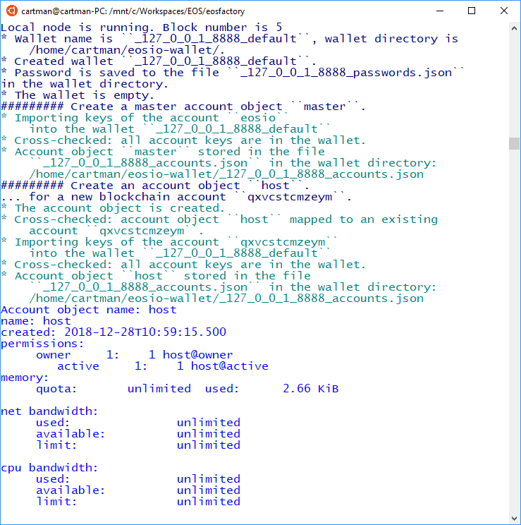
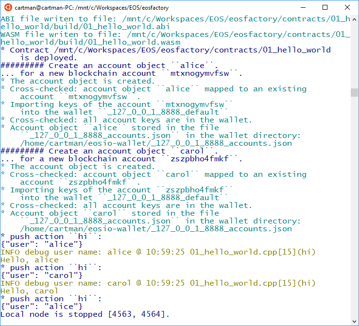

Account Object¶
This article demonstrates how the concept of EOSIO account is applied in EOSFactory. We present how to create an account object, associate it with a contract and then execute some actions of this contract.
Create a new account¶
Create a new Python session and import EOSFactory API:
python3
from eosfactory.eosf import *
Start a local testnet, create a wallet and then create a special MASTER account referenced by a global variable called MASTER:
reset()
create_master_account("MASTER")
NOTE If you write a script, you can use alternative syntax:
MASTER = new_master_account()
This syntax does not work interactively.
Next, use the MASTER account to create another account referenced by a global variable called HOST:
create_account("HOST", MASTER)
The first argument is the name of variable to be created, the second one points to the MASTER account, which we created in the previous step.
NOTE If you write a script, you can use alternative syntax:
HOST = new_account(MASTER)
This syntax does not work interactively.
You can verify that the variable exists and its methods can be invoked, for example:
HOST.info()
Here is the expected outcome:
create account
The create_account command performs several tasks:
- verifies that a
Walletobject exist in the namespace, - verifies that the proposed variable name is not already taken,
- registers a new account on the testnet - this account has its own name generated randomly,
- using the proposed name, creates a global variable referencing the actual account on the testnet,
- opens the wallet, unlocks it and stores the account’s private keys into it,
- and finally, updates its internal statistics tracking all accounts created in a similar way.
All the above actions are logged to the terminal, which can be visible, provided the verbosity is set to its default value.
Account objects reside in the global namespace¶
Account objects reside in the global namespace (of the script module). This fact raises instinct reaction of python practitioners as they know that globals are evil.
We are determined to defend our design decision.
The globals are considered bad in any programming language. But global constants are perfectly fine to use. The account object variables are constants of a smart contract tests because the physical EOSIO accounts, that they represent, are eternal.
The reason that globals are bad is that they allow functions to have hidden and thus hard to understand side effects, if they change any of module globals.
In Python, there is no syntactic difference between constants and variables. With Python, adhering to good practices is then the only general method of reliable programming. With constants, good practice is to make constants uppercase. Then, assigning a value to an uppercase variable is a conscious decision.
Also, it helps that Python globals are local to their modules. Then, it is impossible that one programmer sets a constant variable to a value of an EOSFactory account object, and another programmer in another module redefines this constant just accidentally.
With EOSFactory, a special argument holds. As EOSFactory is for tests, scripts written with it should be composed of functions enclosing a complete live-cycle of a set of EOSIO actors. Thus, each such a function starts with resetting all the account objects (command eosf.reset()). Then, the programmer has to concentrate themselves only within the scope of the current test function.
We can propose EOSFactory good practice: if you do not want global constants in your program, do not use them. Account object global constants, marked with the upper case treat as constants are to be treated – newer rebind those introduced with EOSFactory create_ factory functions.
Finally, we admit that there are methods for having our constant account objects immutable, thus closing the controversy at the expense of decorating these objects with qualifiers, while our method results in clear and compact scripts (account variables not obscured with namespace qualificators). We believe that clearness is the first paradigm of the Python, and this is the reason that we have chosen Python. However, if the community insists, we will implement their way in the next editions.
Account objects have to be unique in the test module¶
The account objects in EOSFactory have to be unique in the test module. If they were not, two different account objects could use (modify) the same physical EOSIO account, or two different local objects, if account objects could be not global constants, having the same object name (representing the same actor), could refer to different physical accounts.
See how EOSFactory defends itself against attacks against uniqueness.
create_account("HOST", MASTER)
######## Account object ``HOST`` restored from the blockchain.
create_account("HOST", MASTER, str(HOST))
######## Account object ``HOST`` restored from the blockchain.
Methods of the Account class¶
An instance of the Account class has the following methods:
info()- list the account’s information,push_action()- push an action to the smart-contract,show_action()- display aJSONfile of a transaction without sending it to the blockchain,table()- list the content of the local database associated with the smart-contract.
NOTE: the MASTER account is an instance of a different class (i.e. the AccountMaster class) which does not implement the above methods. As a consequence, you cannot associate a smart-contract with an instance of the AccountMaster class.
Create a contract object¶
Create an instance of the Contract class and associate it with the HOST account:
contract = Contract(HOST, "hello_world")
The second argument of the creator of the Contract class identifies the location of the contract’s source code (you can supply the entire path, but in case of standard locations, e.g. EOSFactory demo contracts or your predefined workspace, you can just specify the folder name).
Next, let’s build and deploy the contract:
contract.build()
contract.deploy()
Execute the contract¶
If the deployment succeeds, the contract can be executed.
First, create two accounts - alice and carol:
create_account("alice", MASTER)
create_account("carol", MASTER)
And then you can push actions of the contract stored at the HOST account, using those two other accounts as arguments:
HOST.push_action("hi", {"user":alice}, alice)
HOST.push_action("hi", {"user":carol}, carol)
You can also try the show_action method:
HOST.show_action("hi", {"user":alice}, alice)
NOTE: As the hello_world does not define any tables, in this case the table method will not work.
Here is the expected outcome:
execute contract
Finally, stop the local testnet and exit Python CLI:
stop()
Test run¶
The python blocks in the current Markdown document can be executed with a provided bash tool. While the working directory is the root of the EOSFactory installation, do:
eosfactory/pythonmd.sh docs/comments/account.md